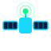
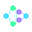

Monitoramento em Tempo Real
Telemetria completa dos 12 compartimentos da Dragon C209 com atualização a cada 3 segundos. Temperatura, umidade, impacto e status de porta — tudo visível no dashboard em qualquer momento.
Transformar a gestão de carga espacial através de dados em tempo real, automação inteligente e uma interface humanizada para os astronautas da Dragon C209.
Garantir a segurança e a eficiência operacional da Dragon C209 através de monitoramento contínuo de telemetria, alertas preventivos automáticos e análise preditiva por Inteligência Artificial — reduzindo riscos para a tripulação e aumentando o sucesso da missão.
— Missão OrbitStock · Global Solution 2026Cada objetivo foi cuidadosamente planejado para resolver um aspecto crítico do gerenciamento de carga espacial.

Telemetria completa dos 12 compartimentos da Dragon C209 com atualização a cada 3 segundos. Temperatura, umidade, impacto e status de porta — tudo visível no dashboard em qualquer momento.
Sistema de alertas em 4 tipos (temperatura, umidade, porta, impacto) com 2 níveis de severidade (warning e critical). Gerado automaticamente a cada ciclo de leitura sem intervenção humana.
AstronautApp: interface dark que simula tablet de bordo. Cronômetro T+ em tempo real, busca por nome/código/compartimento, filtros por categoria e baixa de consumo com atualização instantânea.

Regressão linear sobre histórico de telemetria para projetar temperatura. Claude AI gera relatório com nível de risco, resumo executivo, recomendações priorizadas e nota de confiança baseada no R².
Definição da arquitetura fullstack, modelagem do banco de dados (spacecraft, compartments, items, events, state) e configuração do ambiente de desenvolvimento.
Implementação da API REST com Express 5 e TypeScript. Banco SQLite nativo com seed da Dragon C209: 12 compartimentos, 39 itens e 1.138 unidades.
Orion Poller Service com polling a cada 3s, processamento de telemetria e persistência de eventos. Sistema de alertas automáticos com 4 tipos e 2 níveis de severidade.
Dashboard de controle de missão com KPIs em tempo real, cards por nave, gráficos de telemetria (Recharts) e visualização de compartimentos com status individual.
Interface de bordo com tema dark, cronômetro T+ de missão, busca e filtros de inventário, baixa de consumo com atualização imediata e painel de alertas com resolução.
Regressão linear sobre histórico de telemetria e consumo. Integração com Claude para gerar relatórios em linguagem natural com nível de risco e recomendações priorizadas.
Validação de todos os endpoints, refinamento da UX, documentação do sistema, criação do site de apresentação e preparação para a entrega da Global Solution 2026.
Todos os objetivos foram alcançados. Conheça como o OrbitStock transforma a segurança e a eficiência da missão espacial.